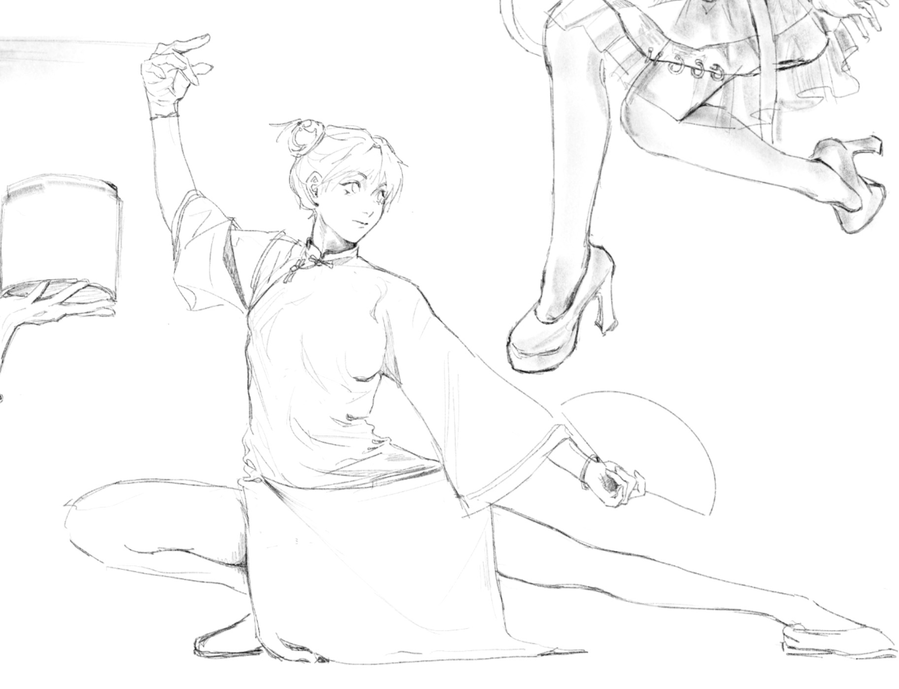

A Brief Bio
Like most young people in this world, I am lingering, exploring, and experiencing the world. I spent 18 years in China learning common knowledge, attending private and public schools, preparing for Gaokao and graduation. Everything was smooth as I passed all the exams, though I had few friends due to my speechless and sarcastic personality. I have been questioning about meanings of life and exploring natural science since I was tiny. And all my family members seemed to praise and love me a lot for my intelligence. The cocky kid was struck when first going abroad, to Pittsburgh for college, that she found the diverse assessment of people. It was a fun fact to me that attributes attached to people are not a thing. Fat, pretty, rich, and well-educated, they are attributes that determine nothing. It took me months to study the new environment and learn how to reserve my attitude toward everyone instead of jumping to a conclusion. I love the person I am right now thanks to the life in Pittsburgh.
Where Dream Begins: Sword Art Online
I watched Sword Art Online in the summer of my seventh grade when I was exposed to anime and manga for the first time. And that magnificent story struck me greatly. It changed how I viewed the world at the time and started my interest into anime culture.
In an age where reality and technology are converging faster than ever, few fictional works have captured the imagination and foresight of humanity’s future, like Sword Art Online (SAO). A story that not only entertains but also anticipates the technological leaps we are now beginning to experience, SAO stands as a visionary artifact in the genre of science fiction. More specifically, it belongs to the class of narratives that explore the consequences of full-dive virtual reality—a frontier that was once pure fantasy but is now approaching ever closer to reality. Created in 2002 by Reki Kawahara, Sword Art Online was born at a time when immersive virtual reality was little more than a dream. Yet, the series foresaw the development of VRMMORPGs (Virtual Reality Massively Multiplayer Online Role-Playing Games), predicting a world where human senses could be completely transported into a digital landscape.
One of the central concepts of Sword Art Online is the “NerveGear,” a fully immersive gaming device that transports the player’s five senses to an online world. This device intercepts the brain’s electronic signals and allows players to experience a virtual world with a level of immersion so complete that it is indistinguishable from reality. In the SAO universe, players can exist freely in a virtual reality without affecting their real-life bodies, just like experiencing a dream. Pain, pressure, and disease are removed entirely, and the basic acts of daily living are simplified into a series of easy button presses. In this world, a user can create a delicious meal in mere minutes, with no need for the laborious process of cooking, and can even engage in fantastical experiences, like flying or experiencing virtual relationships, all within the digital realm.
In contrast to this fully immersive scenario, semi-immersive technologies are beginning to emerge in our own world. Devices like Apple Vision represent a new kind of experience—one that overlays virtual data onto the external world, allowing users to remain physically aware of their surroundings even as they engage with digital information. Yet as global data show that average daily internet usage continues to increase—rising from approximately 6 hours 42 minutes in 2019 to nearly 7 hours by 2021 (DataReportal)—this interconnectivity suggests that individuals will live in ever-closer harmony with their virtual environments. While this might seem less consuming than a complete “full-dive” system, the reality is that neither fully immersive tools like NerveGear nor semi-immersive devices such as Apple Vision will inherently prevent individuals from becoming addicted to the online sphere. Addiction, after all, is a defining feature of virtual worlds, where actions carry virtually no immediate cost and the only true expense is one’s precious time. Regardless of the level of immersion, people can still find themselves trapped in digital environments, sacrificing real-world connections and experiences for intangible rewards and perpetual engagement.
Yet, SAO is not just a tale of escapism: it serves as a speculative guide to the ethical and psychological questions we must ask as we journey deeper into these digital landscapes. As players in the virtual world of SAO face real dangers, including the threat of death by game over, the series interrogates what happens when the boundary between the virtual and the real blurs. For example, in the case of the character Kirito, who is nearly killed by a villain and trapped in the game, questions arise about the accountability of virtual crimes and the effects of being “killed” in a digital world. How would crime committed virtually be counted and verdicted? To what extent would the penalty be implemented as it would be in reality? The borderline between reality and the virtual world seems to fade under this context, and so does the borderline of one’s identities in both worlds.
This brings us to a larger ethical concern explored in SAO: the relationship between humans and technology. While the NerveGear technology in the series is based on an idealized view of digital immersion, its applications are fraught with ethical questions about consciousness, identity, and autonomy. When people are immersed in virtual worlds for extended periods, they risk losing their connection to reality. In some ways, SAO serves as a cautionary tale of what could happen if we lose sight of the physical world while becoming enamored with the potential of virtual realities. This is a concern echoed by prominent figures like Elon Musk, who, in 2021, critiqued the concept of the metaverse, arguing that it was “just marketing jargon.” Musk’s view aligns with the idea that the promises of immersive virtual worlds—such as those seen in SAO—may be far more complex and unattainable than we might expect. Moreover, Musk’s skepticism about Web3 and its supposed decentralization speaks to a larger issue: while technology may promise empowerment and autonomy, the forces controlling it often remain concentrated in the hands of a few tech giants, undermining the utopian vision that virtual spaces are accessible to all.
While SAO explores the allure and danger of being fully immersed in virtual worlds, it also forewarns the psychological impacts of prolonged exposure to such environments. The series critiques the way that digital realities might affect our minds and relationships, with characters in the game becoming so deeply absorbed in their digital avatars that they lose sight of their physical bodies and real-world connections. In contrast, Sword Art Online: Alicization, the third season of the series, delves into another troubling development in virtual worlds: artificial intelligence. In Alicization, an experiment is conducted to create an AI with its own thoughts and consciousness, resulting in the character Alice, a sentient AI who becomes an integral part of the story. This plotline raises further ethical dilemmas, such as whether AI should possess human rights and what it means to be truly “alive.” If AI can think, feel, and experience, how different is it from humans? Should beings created in a digital world be afforded the same rights as people, or do they remain mere tools to be controlled and manipulated?
This ethical debate also mirrors real-world discussions about the implications of AI in human society. In recent years, there has been a growing concern about how artificial intelligence will impact jobs, creativity, and social interactions. As AI continues to develop and evolve, questions like those raised in Alicization will become more pressing. What will our relationship with AI look like in the future? Will we be able to coexist peacefully with intelligent machines, or will the lines between human and machine become too difficult to discern?
In examining these issues, SAO touches on a larger debate about the limitations and dangers of digital immersion. The concept of the Massively Multiplayer Online Role-Playing Game (MMORPG) is central to the SAO universe. MMORPGs are virtual worlds in which players create avatars and interact with other players, often adopting roles and identities that differ from their real-world selves. These games are built on client-server architecture, meaning that the world persists even when players log off, creating a continuous, evolving universe. While the interactions in these virtual worlds are fascinating and provide an exciting escape, they cannot replace real-life relationships and experiences. Long-term exposure to MMORPGs, as seen in SAO, can alter players’ perceptions of reality, blurring the lines between the virtual and the real. Extended time spent in virtual environments can reshape the brain’s neural pathways, leading to a disconnection from the physical world. This concern is central to my argument about the potential harms of being overly immersed in virtual reality. While SAO presents an exciting and captivating digital world, it also serves as a warning about the risks of neglecting our real lives in favor of virtual ones.
In the context of the real world, SAO can be understood as a speculative fiction that highlights both the opportunities and risks of digital technologies. As we continue to integrate virtual reality, AI, and other emerging technologies into our daily lives, the ethical, psychological, and philosophical questions raised by Sword Art Online will only become more relevant. The lines between human and machine, real and virtual, will continue to blur, forcing us to reconsider what it means to be truly “alive.” Moreover, as we explore new digital spaces and create virtual versions of ourselves, we must also be mindful of the impact that these technologies will have on our mental and emotional well-being.
Looking ahead, it’s clear that virtual reality, AI, and digital worlds will play an increasingly significant role in our lives. As we venture into this new era, Sword Art Online remains a vital narrative that guides us in navigating the complex relationship between human consciousness and the silicon-based worlds we are beginning to create. Whether we embrace these new realities or resist them, one thing is certain: the future of human existence will be deeply intertwined with the digital world, and how we choose to engage with that world will shape the course of our collective future.
Reference
- “刀剑神域.” 维基百科: 自由的百科全书, Wikipedia, zh.wikipedia.org/wiki/刀剑神域. Accessed 16 Sept. 2024.
- “NerveGear.” Sword Art Online Wiki, Fandom, swordartonline.fandom.com/wiki/NerveGear. Accessed 16 Sept. 2024.
- Westbrook, Ian. “NerveGear 2.0: Oculus Founder Makes VR Headset That Kills.” Screenshot Media, 8 Nov. 2022, screenshot-media.com/technology/gaming/nervegear-oculus-kills. Accessed 16 Sept. 2024.
- “Metaverse.” Wikipedia, en.wikipedia.org/wiki/Metaverse. Accessed 16 Sept. 2024.
- Musk, Elon. “The Metaverse Is Just Marketing Jargon.” Business Insider, 2021, https://markets.businessinsider.com/news/currencies/elon-musk-metaverse-is-a-marketing-buzzword-crypto-2021-12. Accessed 6 Dec. 2024.
- “Sword Art Online: Alicization.” Wikipedia, 2024, https://en.wikipedia.org/wiki/Sword_Art_Online:_Alicization. Accessed 6 Dec. 2024.
- “Massively Multiplayer Online Role-Playing Game.” Wikipedia, 2024, https://en.wikipedia.org/wiki/Massively_multiplayer_online_role-playing_game. Accessed 6 Dec. 2024.
- Kemp, Simon. Digital 2022 Global Overview Report. DataReportal, We Are Social and Hootsuite, Jan. 2022, https://datareportal.com/reports/digital-2022-global-overview-report. Accessed 17 Dec. 2024.
From Anime to Life

After middle school, I started to draw anime art. There were many great artists I could follow on the internet, like the artists who drew SAO. At that time, I was urging for the style of my favorite artist and practiced every day to imitate and achieve her level. She never made any mistakes in her artwork, as if everything undergoes delicate design. Her genius sense of colors and professional understanding of human anatomy always surprised me in every piece of her artwork. Because of that, I require my drawing to be correct and flawless as well. Any misrepresented relationships of light and shadow and human anatomy will disappoint me, and this perfectionism extends to many aspects of my life. The decoration of my bedroom, makeup, everyday outfits, and even my boyfriend can represent my taste and attitude towards life. My pursuit of “looking good” has reached what could almost be described as an absurd level.

All the way here
I met one of my best friends, Lan, during my gap year. I was admitted to a Chinese college called East China University of Political Science and Law (ECUPL) that year, but I was preparing to go abroad, and Lan was my roommate. We shared the same hobbies, like drawing and watching anime, and surprisingly found our common interest in the virtual world. We talked about our artworks day and night, admiring each other for our flashes of inspiration. We sat back to back, drew until late night. Also, it was the easiest and happiest year after Gaokao because I didn't need the degree in ECUPL, so I barely stressed about exams and homework.
I left ECUPL a year and a half ago, and I still miss Lan. She was the first friend on my way to the virtual world who admitted my talent and respected my efforts. The day I left campus, I left a gift for her, which was a poster card I printed by myself. The following image is what I drew and printed out on the card, Lan's favorite V-tuber. I texted her on her birthday to open my drawer, and the gift was hidden there in advance. She barely spoke a word. Neither did I. There was much more than words could say.